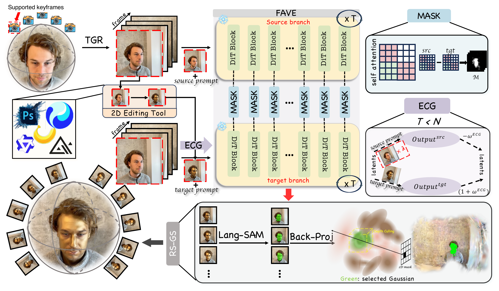

VidEdit3D: Flexible 3D Gaussian Editing
with Video Diffusion
1 Westlake University2 University of Leeds3 Nanyang Technological University4 University of California, Merced
† Corresponding author
Method
VidEdit3D reformulates 3D scene editing as trajectory-based video editing. Starting with a reconstructed scene and a user-edited anchor, it organizes smooth camera paths, propagates the edit across their rendered views, and refines the 3D representation.

Trajectory-Guided Rendering (TGR) selects target-supported views and constructs smooth video clips. Flow-Aligned Video Editing (FAVE) propagates the anchor edit with a pretrained video diffusion model and Editing Consistency Guidance. Region-Selective 3DGS Refinement (RS-GS) transfers the edited frames back into 3D while restricting updates to the target Gaussians.
Demo
Editing Results
Select a case to view the source and edited scenes along the same camera trajectory.
3D scene editing
Loading results…
The cases could not be loaded. Please reload the page; the full demo above remains available.
Comparisons
Each example shows the source scene, four baselines, and our result.
Citation
If you find this work useful, please consider citing:
@misc{yang2026videdit3dflexible3dgaussian,
title={VidEdit3D: Flexible 3D Gaussian Editing with Video Diffusion},
author={Yanming Yang and Chenxi Song and Tong Zhao and Juntao Xu and Wenhao Rao and Yiwen Chen and Yiwei Wang and Chi Zhang},
year={2026},
eprint={2610.35756},
archivePrefix={arXiv},
primaryClass={cs.CV},
url={https://arxiv.org/abs/2610.35756},
}